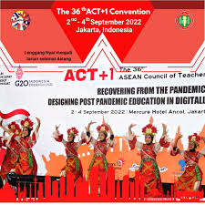
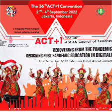

KERJA SAMA REGIONAL SDGS 4 INDONESIA - ASEAN
Kerja sama regional adalah kerjasama dari dua atau lebih negara dalam kawasan tertentu. Umumnya, kerja sama ini dilakukan karena kedekatan wilayah, latar belakang yang signifikan, ataupun kepentingan lainnya yang dimana membutuhkan dua atau lebih negara untuk didiskusikan bersama. Sama seperti kerja sama bilateral, hanya saja kerja sama regional lebih menenakan terhadap kerja sama negara-negara yang berada di kawasan yang dekat/sama.
Pada kerja sama regional kali ini, Indonesia juga tentunya mempunyai peran penting dalam bidang pendidikan, terutama di organisasi ASEAN (Association of Southeast Asian Nations) atau ACT. ACT merupakan organisasi yang menjorok ke dalam mengenai peningkatan dan penguatan hubungan dan kolaborasi antar guru di negara-negara ASEAN. Indonesia juga memiliki peran-peran penting dalam organisasi ini. Yakni, pertukaran pengetahuan dan pengalaman mengajar dari setiap guru, ikut serta membahas kesejahteraan setiap guru, meningkatkan standar pendidikan dan sertifikasi setiap guru, mengembangkan program-program pelatihan setiap guru, dan memperkuat solidaritas regional. Dalam pertukaran pengetahuan dan pengalaman, mereka juga membagi metode-metode pengajaran yang dianggap inovatif dan efektif bagi setiap murid dan pengembangan kurikulum. Lewat pertukaran tersebut, para guru dapat membahas metode pengajaran yang efektif selanjutnya untuk diterapkan. Selain dari itu, Indonesia juga membahas isu-isu yang dialami setiap guru (gaji, perlindungan kerja, dan hak profesional), menyiapkan fasilitas yang nyaman, dan mendukung kebijakan-kebijakan yang efektif. Juga, mereka membahas peningkatan terhadap standar pendidikan dan sertifikasi guru supaya kualitas setiap guru merata dan mengikuti standar yang sesuai seperti dari pelatihan hingga kemampuan mengajar yang fleksibel. Terakhir, Indonesia juga menekankan dan menguatkan hubungan solidaritas yang erat di tengah keberagaman budaya Asia Tenggara dan memperkuat nilai persatuan.